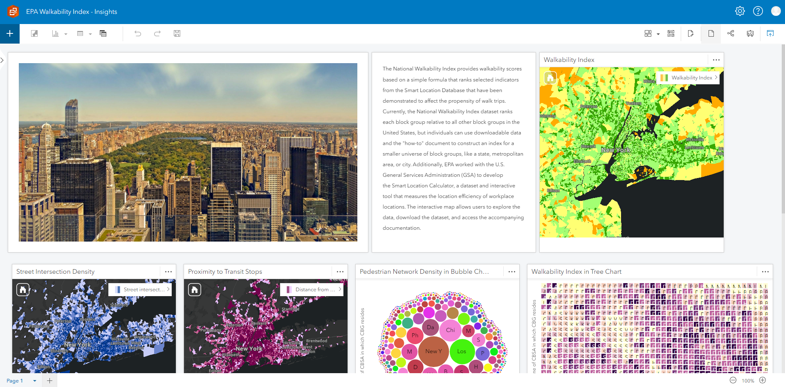
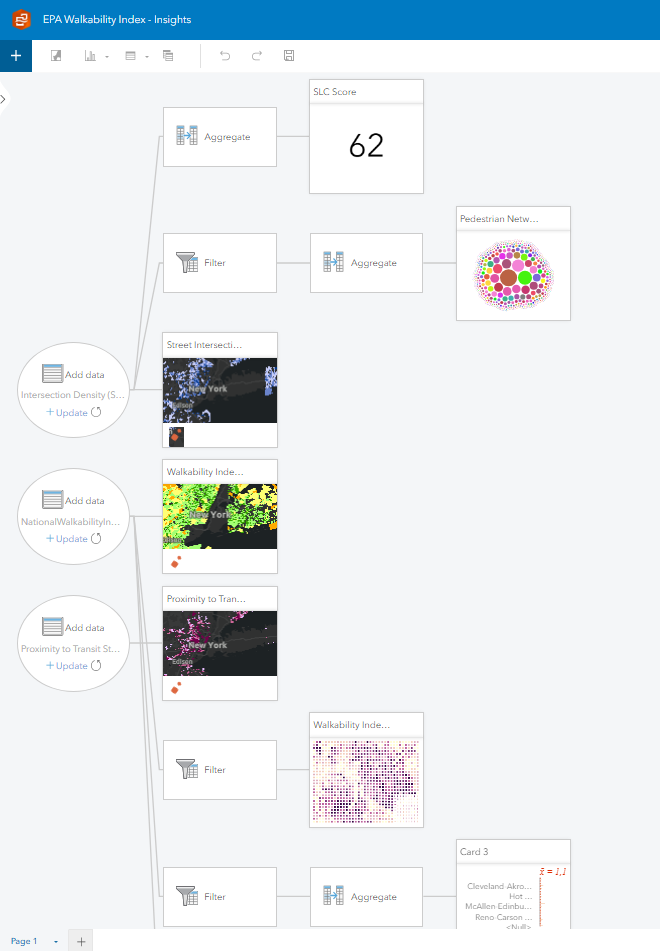

Insights for EPA National Walkability Index

Why Insights?
ArcGIS Insights provides a powerful and user-friendly platform for visual data exploration, spatial analysis, and advanced analytics, helping organizations make more informed decisions.
| Positives |
Negatives |
Future Iterations |
| Interactive data exploration |
Limited Customization |
Can work more on statistical analysis |
| Advanced Analytics |
Requires time to explore complex functionalities |
Create more dynamic and interactive visualizations |
| Collaborative features |
Not available without internet connection |
Customize maps to convey meaningful insights |
| Attractive charts |
Needs subscription/license |
|
What was interesting?
The interesting part in ArcGIS Insights is that we can perform various statistical analysis and the platform has a model builder-like interface to perform them. Also, there are various charts to visualize the data, which helps make the analyis more attractive.
